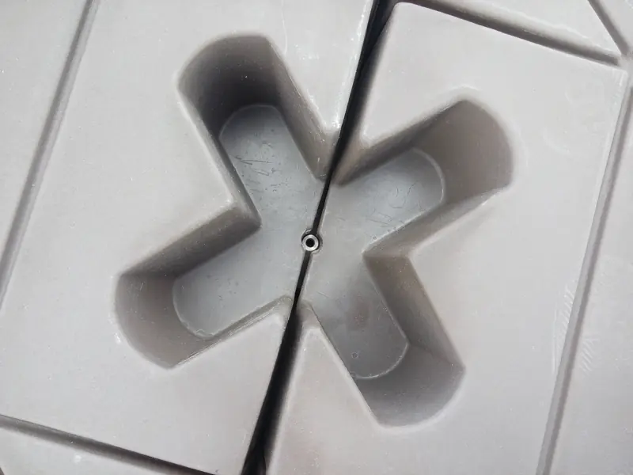
01 / 05
El módulo
Polietileno rotomoldeado. Al juntar cuatro, sus esquinas forman un hueco en X. Lleva tapones para liberar presión y sacar agua en caso de picadura.
75 × 75 × 22.5 cm · 13.5 kg
ModuleX Dock · Querétaro, México
Diseñados y fabricados totalmente en México. Se arman sin mojarse y flotan en agua dulce o salada.
Video real · obra en Veracruz
02 · Piezas

Polietileno rotomoldeado. Al juntar cuatro, sus esquinas forman un hueco en X. Lleva tapones para liberar presión y sacar agua en caso de picadura.
75 × 75 × 22.5 cm · 13.5 kg
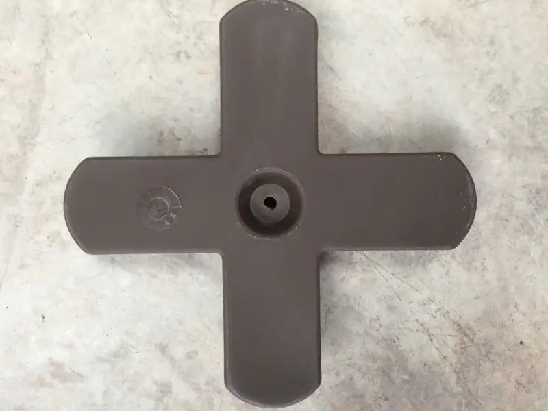
Entra en el hueco en X por arriba. Su orificio recibe un tornillo de acero inoxidable.
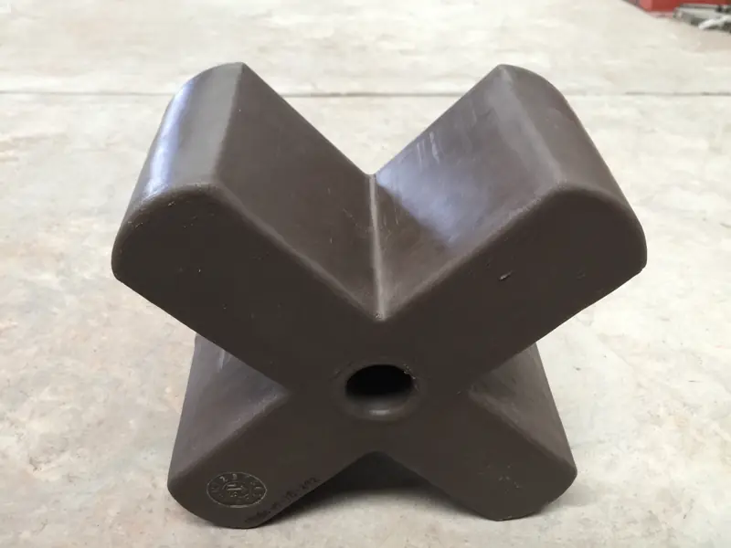
Va por debajo, con la tuerca de acero inoxidable que ajusta el tornillo.
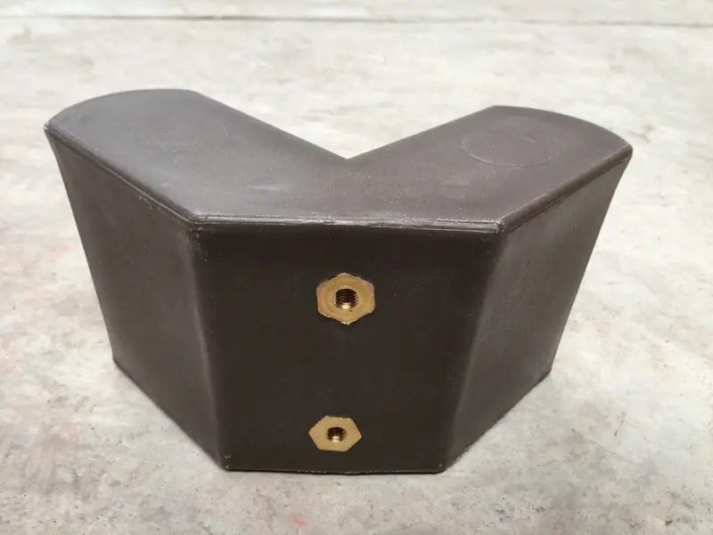
Cierra la orilla del muelle. Sus orificios sirven para fijar el anclaje.
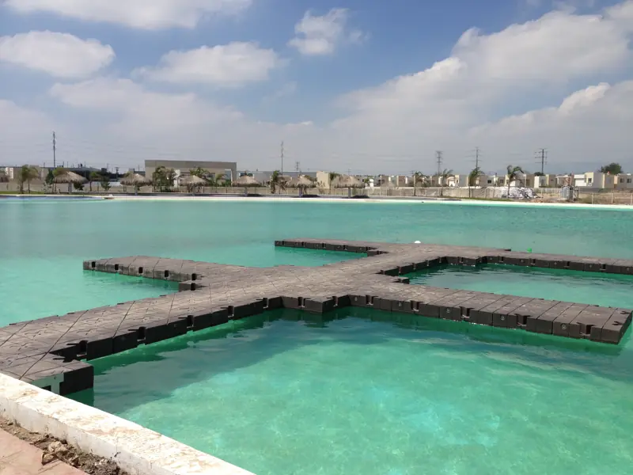
La sujeción en X reparte los esfuerzos y evita que el muelle se desplace en cualquier dirección.
Imágenes de carácter ilustrativo; la forma varía según el diseño solicitado.
Recreación generada a partir de una imagen de ModuleX
03 · Configura
Cada módulo es independiente: el muelle se instala, se desinstala o se reconfigura después. Muelle residencial o de pesca en un lago o una presa, plataforma de natación, acuacultura: la forma la pide el lugar.
04 · En la orilla
Lo puede armar cualquier persona con un dado comercial y un accesorio que viene con el muelle. Ritmo de referencia de la ficha técnica: 50 módulos por día por persona.
Mueve el cursor sobre la fotoArrastra sobre la foto o usa el control para pasar del armado al muelle terminado.
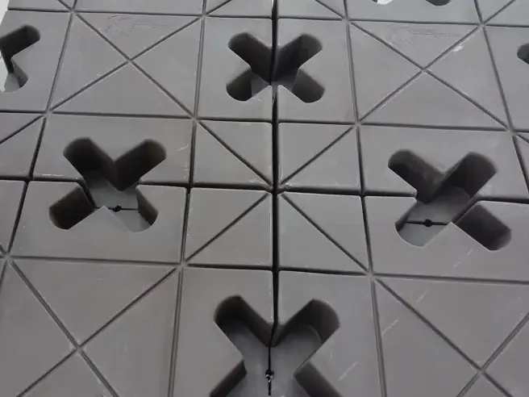
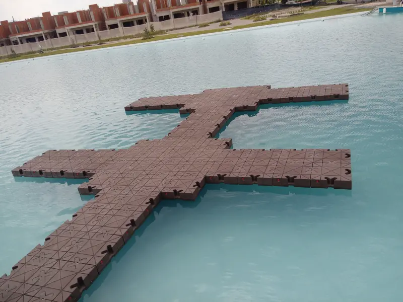
05 · Obras
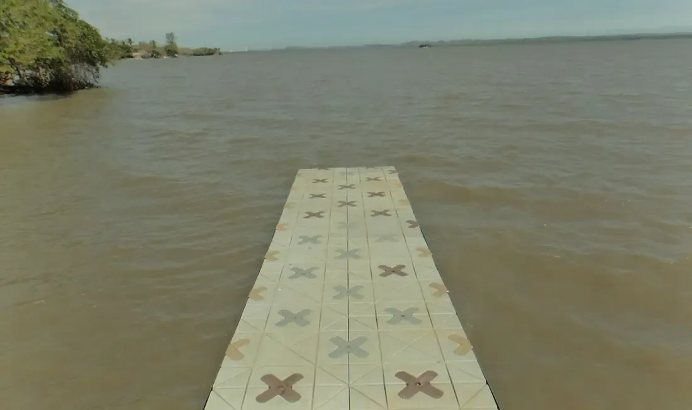
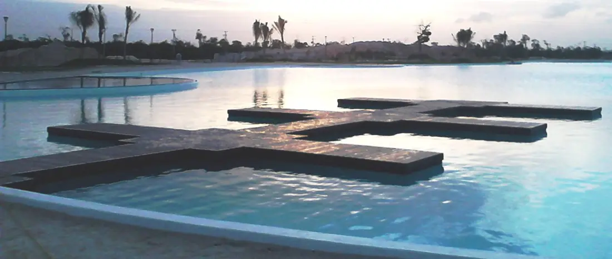
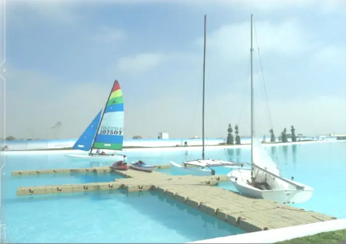
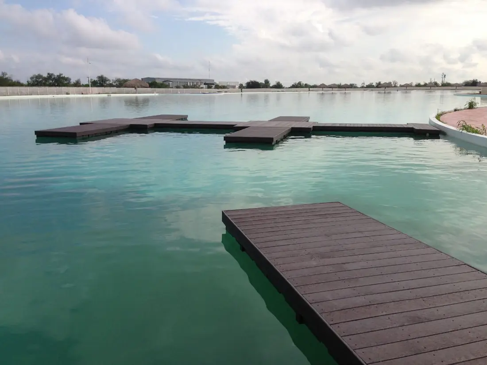
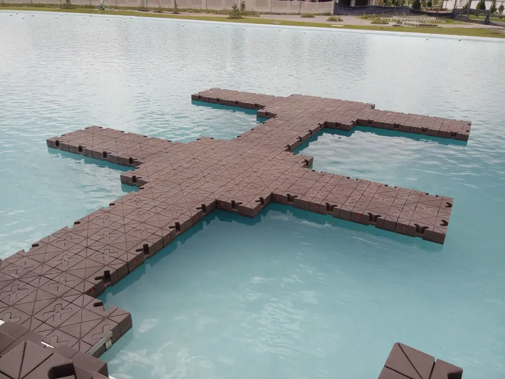
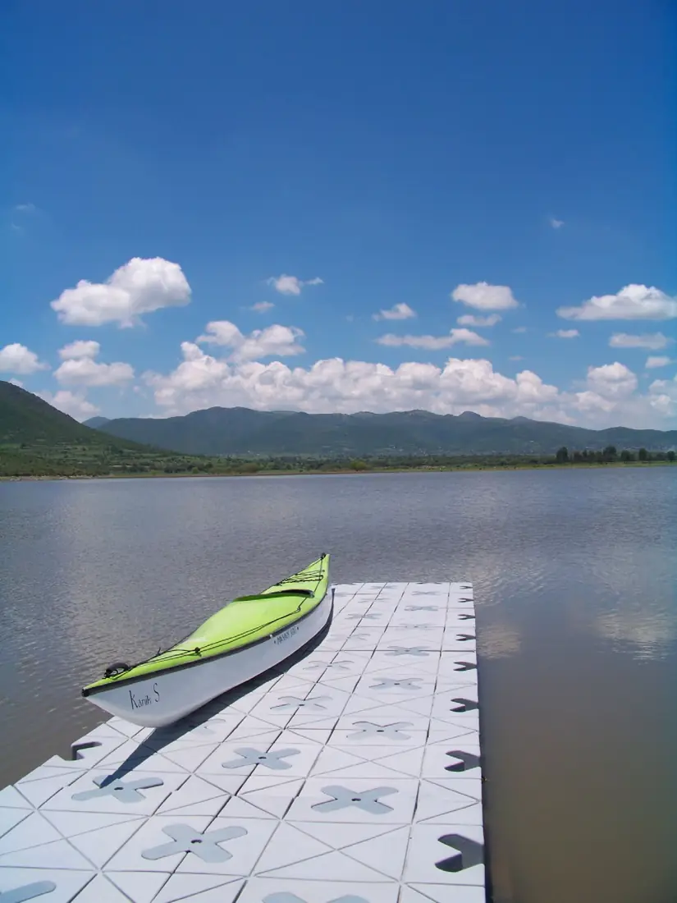
El color y la forma varían según el proyecto.
¿Dónde va el tuyo?Fotos reales de obra. Imágenes de carácter ilustrativo; la forma varía según el diseño solicitado.
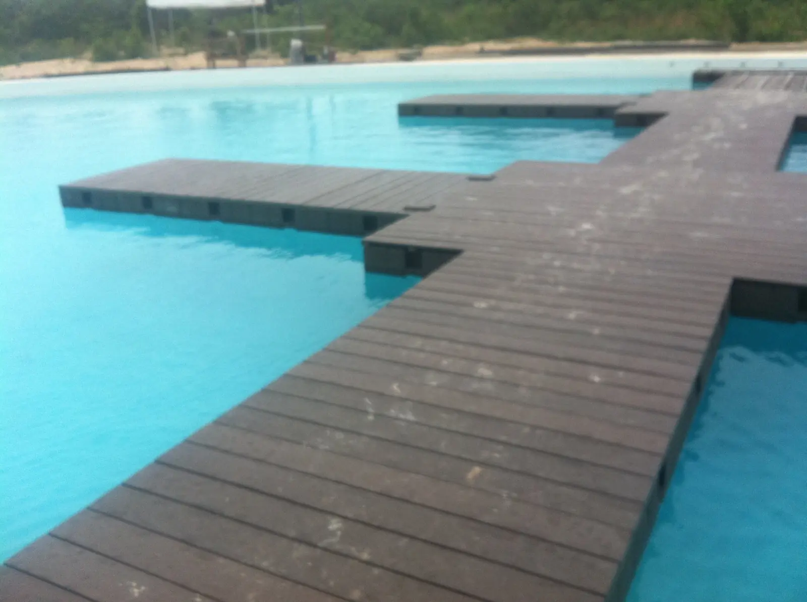
Cancún · 2013
El polietileno no se oxida ni se astilla. Se lava con agua.
06 · Ficha técnica
07 · Cotiza
Cada muelle se cotiza por proyecto: la medida, la forma y el anclaje dependen del lugar.
Mayan Seas · Cerro de las Campanas 15, Col. Las Américas, 76121 Querétaro, Qro.Horario de atención: todavía no está publicado. Llama o deja tu mensaje por WhatsApp o correo.